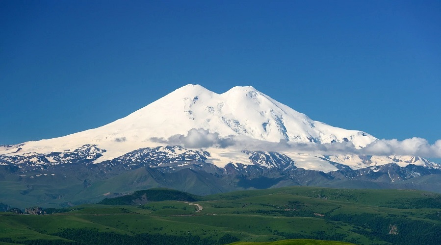

| Elbrus |
|  |
Europe's highest peak
-
Mount Elbrus, with a height of 5642 m, is the highest mountain in Russia and Europe.
-
It is the highest stratovolcano in Eurasia and the 10th-most prominent peak in the world.
-
Elbrus has two summits, both of which are dormant volcanic domes.
-
The taller, western summit is 5,642 metres, and the eastern summit is 5,621 metres.
-
Elbrus is situated in the northwest of the Caucasus, 100 kilometres from the Black Sea and 370 kilometres from the Caspian Sea, which is visible from Elbrus on exceptionally clear days.